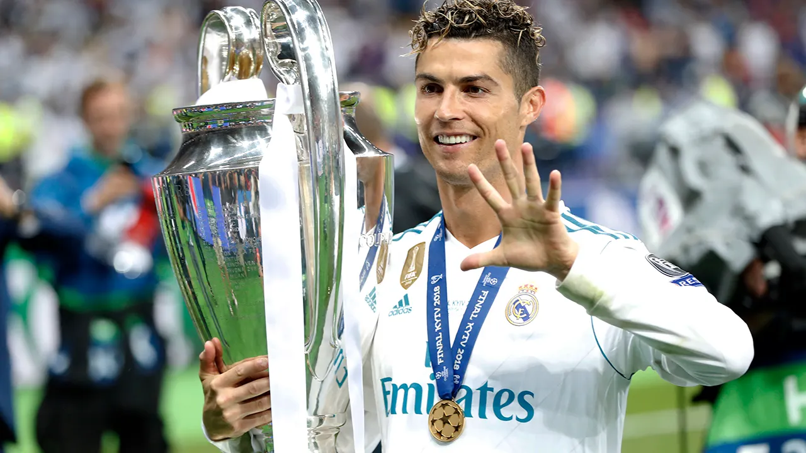

Cristiano Ronaldo
Cristiano Ronaldo is not just a football player, he's a global icon. With five Ballon d'Or awards, multiple league titles, and a record-breaking number of goals, he's widely regarded as one of the greatest football players of all time. But Ronaldo's impact goes beyond the pitch. He's a philanthropist, donating millions to charitable causes around the world. He's a role model, inspiring young people with his discipline, hard work, and dedication. And he's a symbol of hope, having overcome poverty and adversity to achieve greatness. Cristiano Ronaldo - a true legend, both on and off the field.
Zinedine Zidane

Zinedine Zidane, the French football legend who has left an indelible mark on the sport. His mesmerizing ball control, vision, and creativity on the field were a thing of beauty to watch. But Zidane is not just a great player. He's also an exceptional coach. His tactical knowledge, man-management skills, and ability to inspire his players have made him one of the most successful coaches in the world. Zidane's contributions to his clubs and country have been immense, and his performances in big games have made him a true legend of the game. And his popularity among the fans is a testament to his greatness both on and off the field.
Alfredo Di Stéfano
Alfredo Di Stefano, the Argentine-Spanish football legend who is widely regarded as one of the greatest players of all time. His exceptional technique, speed, and vision on the field were unmatched during his era.But Di Stefano is more than just a great player. He's also a symbol of resilience and determination. Despite facing many challenges in his career, including a near-fatal injury, Di Stefano continued to play at the highest level and led his teams to numerous victories. His contributions to his clubs and country have been immense, and his performances in big games have made him a true legend of the game. And his legacy as a player and a symbol of perseverance will always be remembered in the football world.Raul Gonzalez

Raul Gonzalez, the Spanish football legend who is widely regarded as one of the greatest strikers of all time. His exceptional skill, precision, and finishing ability on the field were a joy to watch. But Raul is more than just a great striker. He's also a symbol of loyalty and leadership. Throughout his career, Raul remained loyal to his club, Real Madrid, and led his team to numerous victories. His contributions to his club and country have been immense, and his performances in big games have made him a true legend of the game. And his popularity among the fans is a testament to his greatness both on and off the field.
Sergio Ramos
Sergio Ramos, the Spanish football legend who redefined the art of defending. His physicality, aggression, and aerial ability on the field were unmatched during his era. But Ramos is more than just a great defender. He's also a symbol of leadership and resilience. He's a vocal leader who commands respect from his teammates and opponents alike. Ramos' contributions to his club and country have been immense, and his performances in big games have made him a true legend of the game. And his popularity among the fans is a testament to his greatness both on and off the field.
Karim Benzema

Karim Benzema, the French football star who has established himself as one of the world's top strikers. His technical ability, speed, and finishing skills on the field have made him a nightmare for defenders. But Benzema is more than just a great striker. He's also a symbol of perseverance and team play. Benzema's work ethic and unselfish play have helped his team achieve numerous victories. His contributions to his club and country have been immense, and his performances in big games have made him a valuable asset to any team he plays for. And his popularity among the fans is a testament to his greatness both on and off the field.
Roberto Carlos

Roberto Carlos, the Brazilian football legend who is widely regarded as one of the greatest left-backs of all time. His incredible speed, technical ability, and powerful left foot were a joy to watch. But Roberto Carlos is more than just a great left-back. He's also a symbol of resilience and determination. Despite facing many challenges in his career, including injuries and setbacks, Roberto Carlos continued to play at the highest level and led his teams to numerous victories. His contributions to his clubs and country have been immense, and his performances in big games have made him a true legend of the game. And his popularity among the fans is a testament to his greatness both on and off the field.
Iker Casillas
Iker Casillas, the legendary goalkeeper who redefined the art of goalkeeping. His lightning reflexes and incredible shot-stopping ability have made him one of the best goalkeepers in the world. But Casillas is not just a great goalkeeper. He's also known for his leadership and composure on the field. He's a vocal leader who commands his area and instills confidence in his teammates. Casillas' contributions to his club and country have been immense, and his performances in big games have made him a true legend of the game. And his popularity among the fans is a testament to his greatness both on and off the field.
Luka Modric
Luka Modric, the Croatian midfielder who has been the heartbeat of Real Madrid's success in recent years. His exceptional vision, passing range, and ability to read the game have made him one of the best midfielders in the world. But Modric is not just a playmaker. He's also known for his hard work and tenacity on the field. He's a tireless worker who is always ready to track back and defend. Modric's leadership and experience have been invaluable to Real Madrid over the years. And his ability to perform in big games has helped the team win numerous trophies.
Marcelo
Marcelo, the Brazilian left-back who has become a Real Madrid legend. His attacking prowess and ball control are a thing of beauty to watch. But Marcelo is more than just an attacking threat. His defensive skills are equally impressive. He's known for his fearless and aggressive approach, which often puts him in the right position to win the ball. Marcelo's passion for the game and his love for Real Madrid have made him a fan favourite. And his contribution to the club's success over the years will never be forgotten.